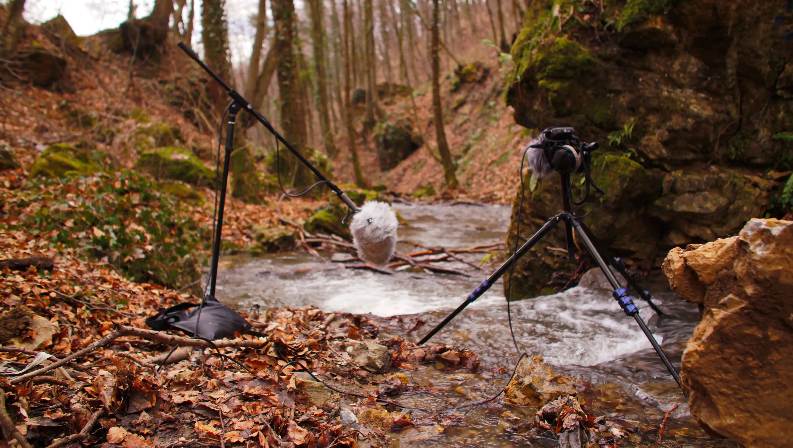
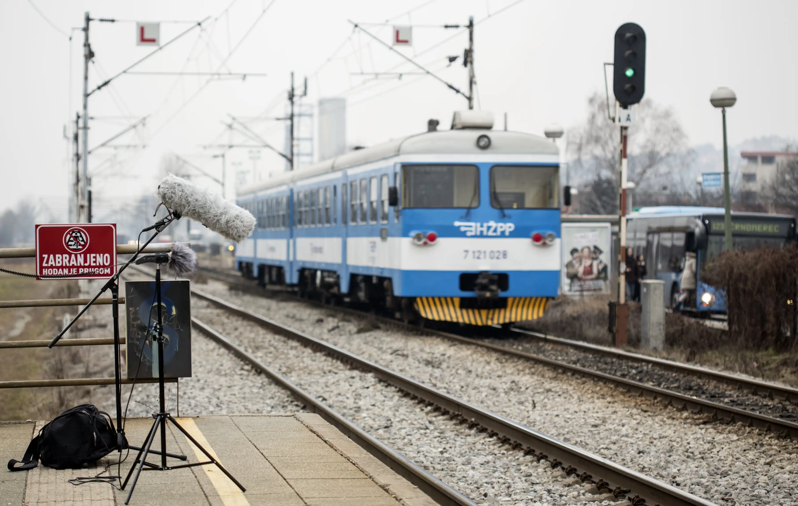
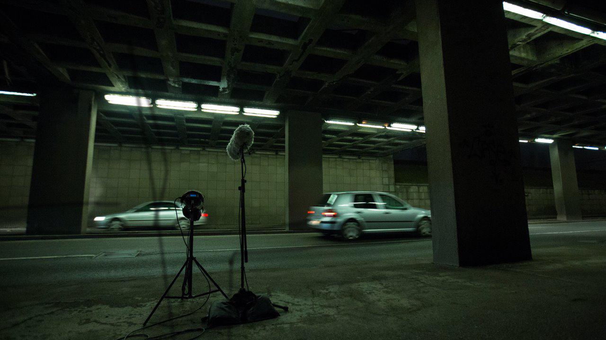
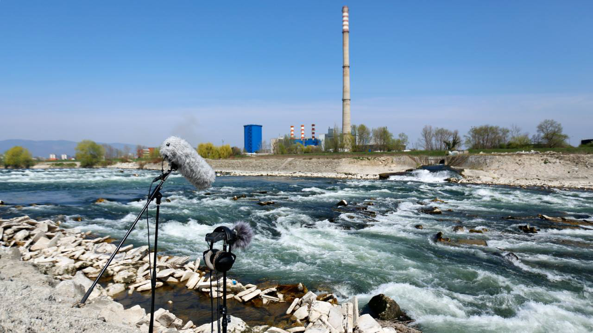
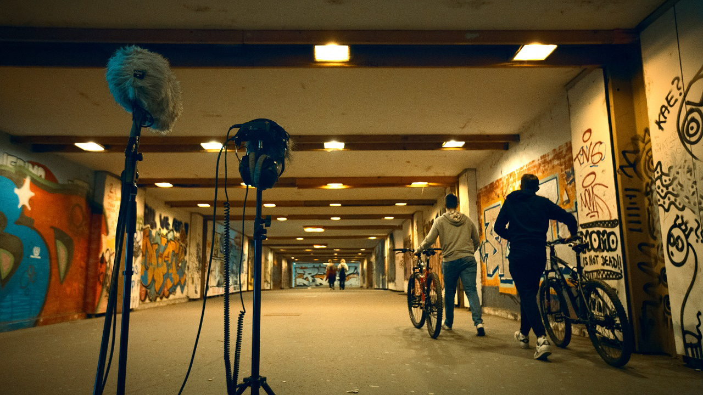
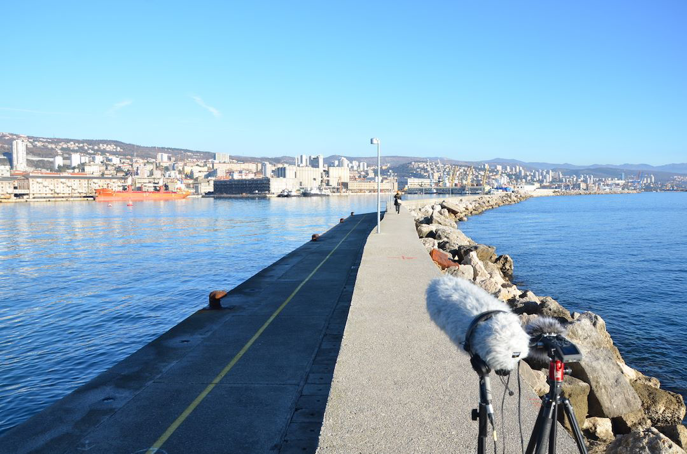

Atmo year
04.02.2026
2017. was an important year in many aspects. This would be the last year before opening my small business. My career as a boom operator started to take off. I worked for the first time as a second boom on set which provided new challenges. I worked as a sound mixer on documentaries and I even had the opportunity to do some sound design work. This was all very exciting and stressful. It also left little to no time for working on my sound libraries and the continuation of my website.

To avoid completely abandoning the project I decided that I would record one sound for every week of the year and publish it through soundcloud for free download. This way I wouldn't have to bother Rebeka to update my site, I wouldn't have to think about what type of library to make and I would practice doing field recording, with the equipment I have. One ambience sound and one photo for social media per week. I shared this idea with Rene Gallo, who was trying to make it as a cinematographer / director at that time and he offered to join me and take the first photo.

I recorded everything on the Zoom H6 with an XY stereo microphone to which I added my Sennheiser 416. I got one stereo and one mono recording that worked separately or could be mixed together adding more sound to the center of the stereo image. At first I was focused on Zagreb, because I was living there. There were enough diverse locations to record different ambiences and it wouldn't take me more than a morning or an afternoon to capture them.

I talked to colleagues about what I'm trying to do and asked some of them to join me, while some offered their services. I have to emphasize that nobody got paid for this. I would cover the travel & food expenses if there were any, but that was it, so all I can do now is say thank you one more time to everybody who helped me make this library possible: Rene Gallo, Marko Dalić, Dragica Posavec, Tamara Dugandžija, Ana Jurčić, Iskra Jirsak, Ranka Latinović, Sandro Adamović & Mario Okun. You can find all the photos on my Instagram account.

A total of 55 recordings were made in that period and I learned quite a lot about the difficulties of field recording. Recording clean sound without the influence of any type of noise made by humans is quite the challenge in this day and age. Recording quiet sounds without quality equipment is also difficult if you want to avoid adding a bunch of noise with gain staging either during the process of recording or in post-production. Without quality microphone protection, even the mildest wind can be your worst enemy. Setting up microphones on uneven terrain is a hassle. Nosey(nosy?) passers-by tend to ask questions at the possible worst time. People change their behaviour if they realise you're recording them.

I learned all these and a bunch of other lessons during this project. The sounds were downloaded and used which made me really happy and gave me hope that all of this still made sense and that I should keep trying to make it work. With hope came the idea that 2018. Would be the year that I would revive the website. 2018. Was the year I recorded something I could really call my first sound library.

Talk to you soon. Bye!